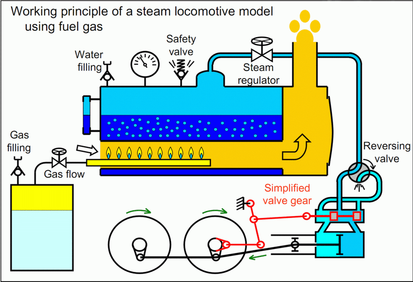

The steam engine

The steam engine stands as one of the most transformative technological breakthroughs in human history. Its invention revolutionized transportation manufacturing and ultimately the entire industrial landscape. In this article we delve into the context and also factors and profound effects of this monumental innovation.
The steam engines inception can be traced back to the 1st century AD when Hero of Alexandria created the aeolipile a rudimentary steam powered device. However this wasn’t until the 18th century of that the steam engine as we know it began to take shape. In 1712 Thomas Newcomen developed the first commercially successful steam engine primarily used for pumping water out of mines. James Watts improvements in the 1760s further propelled the steam engines development making it more efficient and versatile.

Several key factors converged to the enable the invention of this steam engine. Firstly they growing demand for coal as a source of energy drove innovation in mining techniques. This coupled with the need to pump water out of the increasingly deeper mines created a pressing need for more efficient machinery. Additionally advancements in metallurgy provided the materials necessary to construct the robust boilers and cylinders required for steam engines. Intellectual curiosity and scientific inquiry also played a crucial role with figures like Watt and Newcomen driven by a desire to understand and harness the power of steam.
The steam engines impact on people daily lives cannot be overstated. In transportation it facilitated the development of railways and steamships drastically reducing travel times and opening up new opportunities for trade and commerce. In manufacturing steam powered factories ushered in the era of mass production leading to unprecedented economic growth and urbanization. Furthermore steam engines powered a myriad of other innovations from steam powered printing presses to agricultural machinery transforming every aspect of society.

The social and economic effects of the steam engine were profound and far reaching. Economically it spurred the Industrial Revolution and propelling economies from the agrarian to industrialized. This shift brought about significant wealth accumulation but also exacerbated social inequalities as factory owners amassed fortunes while this workers endured harsh working conditions and meager wages. Socially the rise of industrial cities transformed the fabric of society as rural populations flocked to urban centers in search of employment. This migration led to overcrowded living conditions unsanitary environments and the emergence of social unrest.
In conclusion, the steam engine stands as a testament to human ingenuity and innovation. From its humble origins as a pump for mines it evolved into a powerhouse that reshaped the world in ways unimaginable to previous generations. While its legacy is marred by environmental degradation and social inequities it remains a symbol of progress and the limitless potential of technology to shape our collective destiny. As we continue to grapple with the challenges of the 21st century at the lessons of the steam engines legacy remind us of the importance of responsible innovation and the need to consider the broader implications of our technological advancements.